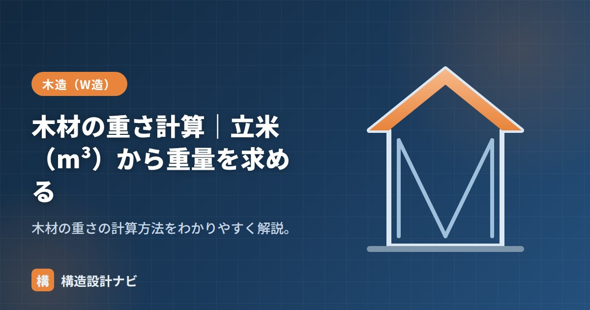

木材の重さ計算｜立米（m³）から重量を求める

木材の重さとは、木材の体積に密度（単位体積重量）を掛けて求まる重量のことです。柱や梁など構造部材の自重を求めるときはもちろん、現場で木材を持ち上げたり運搬したりする際の重さの見当をつけるときにも使う、実務でよく使う基本の計算です。
- 木材の重量＝体積（m³）×密度（kg/m³）で求める。
- 柱・土台・梁など、部材寸法ごとにおおよその重さの目安がある。
- 人力で運ぶ際は、木材が長尺・重量物になりやすい点に注意する。
計算の基本
水の密度が1000kg/m³なので、比重に1000を掛けると密度（kg/m³）になります。たとえば気乾比重0.38のスギは、密度380kg/m³です。
計算例
スギ（気乾比重0.38）の柱、105mm角・長さ3mの重さは？
重量 ＝ 0.0331 × 380 ≒ 12.6 kg
1m³あたりなら、スギは約380kg、ヒノキは約410kg、ベイマツは約500kgが目安です。より詳しい樹種別の比重は「木材の比重と密度」を確認してください。
重さは樹種（比重）と含水率で変わります。一般には気乾状態の比重で計算します。生材（乾燥前）は水を多く含むため、もっと重くなります。
部材寸法別の重量目安
実際の軸組で使う部材のおおよその重さは、次のように試算できます（気乾状態の目安）。
| 部材 | 寸法・樹種 | 体積 | 重量目安 |
|---|---|---|---|
| 土台 | 105mm角×4m・ヒノキ | 0.0441m³ | 約18kg |
| 通し柱 | 120mm角×3m・スギ | 0.0432m³ | 約16kg |
| 梁 | 105×300mm×4m・ベイマツ | 0.126m³ | 約63kg |
柱1本程度なら一人でも扱える重さですが、断面の大きい梁材になると数十kgに達し、複数人での運搬・揚重が必要になります。
運搬・人力作業での注意点
木材は同じ体積でも樹種や含水率次第で重さが変わるため、現場での人力運搬の計画には注意が必要です。一般的な目安として、人が無理なく持ち上げられる重さは20〜25kg程度とされることが多く、これを超える梁材などは複数人での運搬や台車・小型クレーンの利用を検討します。また、雨に濡れた木材や乾燥前の生材は、見た目以上に重くなっている点にも注意しましょう。
よくある質問
Q1. 一人で運べる重さの目安はどれくらいですか？
部材の長さ・持ちやすさにもよりますが、一般的には20〜25kg程度が無理なく扱える目安とされています。上表の梁材のように60kgを超える場合は、複数人での運搬が基本です。
Q2. 濡れた木材はどのくらい重くなりますか？
含水率が高いほど重くなります。気乾状態を基準にした重量に対し、雨に濡れた状態や乾燥前の生材では数割〜倍近く重くなることもあるため、保管・運搬時は木材を濡らさない配慮も大切です。
上棟の現場で梁材の荷揚げを見ていると、一人で持てる重さを超えた部材を無理に運ぼうとする場面に出くわすことがあります。数十kgを超える部材は台車や複数人での運搬をあらかじめ指示し、現場で判断が割れないようにしています。
含水率で重さはどれだけ変わるか
木材の重さを考えるうえで見落とせないのが含水率です。同じ材でも、乾き具合で重量は大きく変わります。
| 状態 | 含水率の目安 | スギ材の重量（1m³あたり） |
|---|---|---|
| 生材（伐採直後） | 100〜200%以上 | 約700〜900kg |
| 気乾状態（自然乾燥） | 約15% | 約380kg |
| 人工乾燥材（KD材） | 15〜20%以下 | 約380〜400kg |
| 全乾状態（完全乾燥） | 0% | 約330kg |
生材は気乾材の2倍前後の重さになることがあります。含水率とは「水分の質量 ÷ 全乾状態の木材の質量」で表すため、100%を超えることも珍しくありません（木材の細胞内に水が満たされている状態）。現場で「思ったより重い」と感じる材は、乾燥が進んでいない可能性があります。
構造設計で部材の自重を拾うときは、気乾状態の値を用いるのが標準です。建物が完成して使用される段階では、木材は室内環境と平衡した含水率（おおむね15%前後）になっているためです。ただし、施工中の仮設計画や運搬計画では、乾燥が不十分な材の重量を見込む必要があります。
主な樹種の気乾比重
| 樹種 | 気乾比重の目安 | 1m³あたりの重量 | 主な用途 |
|---|---|---|---|
| スギ | 0.38 | 約380kg | 柱・間柱・野地板 |
| ヒノキ | 0.41 | 約410kg | 土台・柱（耐久性が高い） |
| ヒバ | 0.41 | 約410kg | 土台（防蟻性に優れる） |
| ベイマツ | 0.50 | 約500kg | 梁・桁（曲げ強度が高い） |
| ベイツガ | 0.47 | 約470kg | 造作材・下地材 |
| ナラ・カシ類 | 0.65〜0.90 | 約650〜900kg | 床材・造作（硬い広葉樹） |
一般に、比重が大きい樹種ほど強度も高い傾向があります。梁など曲げを受ける部材にベイマツが使われるのは、スギより比重が大きく曲げ強度に優れるためです。ただし重い分だけ扱いにくく、コストも上がるため、部位ごとに必要な性能で選び分けます。
まとめ
- 木材の重量＝体積（m³）×密度（kg/m³）。密度＝気乾比重×1000。
- スギ約380、ヒノキ約410、ベイマツ約500kg/m³が目安。
- 柱は10数kg、梁材は数十kgになることが多く、運搬計画に注意する。
- 樹種と含水率で重さが変わる。通常は気乾比重で計算する。